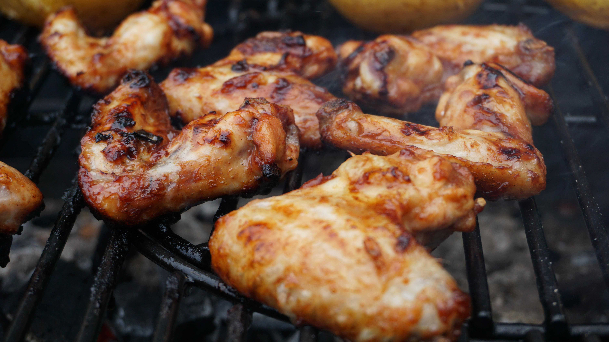

Barbecue Chicken
Home

Description
A simple grilled barbecue chicken recipe with a nice, thick barbeque glaze attached to the skin.
Ingredients
- 1 whole chicken, cut into halves
- 1/4 cup vinegar
- 2 tablespoons barbecue sauce
- 2 garlic cloves, crushed
- 1 tablespoon salt
- 1 teaspoon ground black pepper
- 1 teaspoon paprika
- 1 teaspoon onion powder
- 1/2 teaspoon cayenne pepper
- 1/2 cup barbecue sace, or as needed
Steps
- Cut 1/2-inch deep slashes in the skin-side of each chicken half: two cuts in each breast, two in each thigh, and
one in each leg. Remove wing tips.
- Whisk vinegar, 2 tablespoons barbecue sauce, and garlic together in a large bowl. Place chicken in the bowl and
turn to coat. Arrange chicken halves in the bottom of the bowl with the cut sides down; cover with plastic wrap
and refrigerate for 1 hour.
- Preheat an outdoor grill for medium-high heat and lightly oil the grate.
- Remove chicken from the bowl and pat dry with paper towels; discard any remaining marinade. Place chicken
halves, skin-side up, on a plate and season with salt, pepper, paprika, onion powder, and cayenne pepper.
- Cook chicken, skin-side down, on the preheated grill until grill marks appear, 3 to 4 minutes. Turn chicken
over, close the grill lid, and cook, basting with remaining barbecue sauce every 6 minutes, until no longer pink
at the bone and the juices run clear, about 35 minutes. An instant-read thermometer inserted into the thickest
part of the thigh, near the bone should read 165 degrees F (74 degrees C).